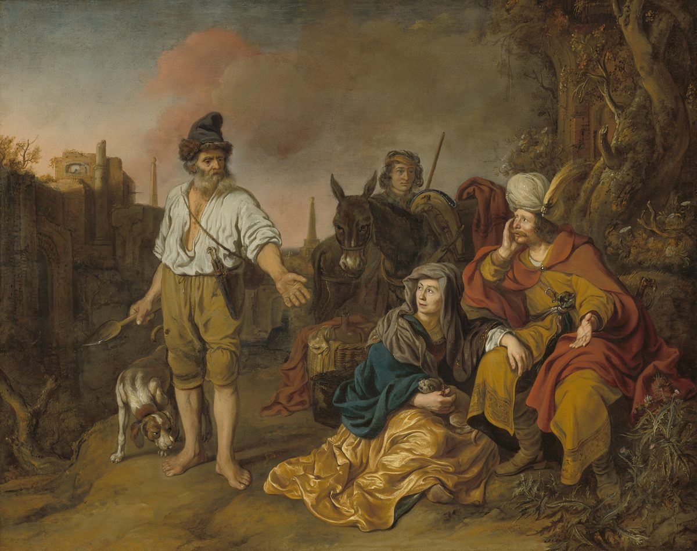

Judges 19 — The Mister Translation

Van den Eeckhout paints verses 16–20, the one moment of welcome in the chapter: the old man from Ephraim, “coming in from his work in the field in the evening” with his spade still in his hand, offers the travellers his house — “only do not spend the night in the square”. The painter stops before the night.

Translator's Notes — verse by verse
Another Levite. The refrain returns with its words turned round, “when there was no king in Israel” (compare Judges 18:1, now on these pages), and with it another Levite: this one lives in Ephraim and takes a wife from Bethlehem, where the Levite of Judges 17:7 (now on these pages) came from. She is ishah pilegesh, “a woman, a concubine”, a pilegesh, a wife of lower standing; the two words stand together in two verses of the Hebrew Bible, here and at verse 27. She is never named.
“Played the harlot against him.” The Hebrew vattizneh alav uses the verb of prostitution, with a preposition that makes it an offence against him. The witnesses do not agree on what it means. The A Greek text has “was angry with him”, as though reading another verb, and the B text only “went away from him”. The KJV has “played the whore against him”, the ASV “played the harlot against him”, the NWT 1984 “began to commit fornication against him”, and the NIV “she was unfaithful to him”; the TLB follows the Greek, “she became angry with him”, and the Douay has only “she left him”. Josephus says they quarrelled because she did not return his love, and that she left him “in the fourth month” (Antiquities 5.136–137, numbered 5.2.8 in Whiston).
“To speak to her heart.” After four months he goes after her “to speak to her heart and bring her back”, the words of Shechem to Dinah (Genesis 34:3) and of Joseph to his brothers (Genesis 50:21), both now on these pages. The written Hebrew has “to bring him back”, the margin “to bring her back”. The ASV has “to speak kindly unto her”, the NWT 1984 “to speak consolingly to her”. Her father “rejoiced to meet him” and “held him fast”: vayyachazeq, the verb that returns when the Levite “seized” her at verses 25 and 29.
Abraham’s bread. On the fourth day the father says, “Refresh your heart with a piece of bread”: pat lechem and the verb sa’ad, Abraham’s words to his three guests at Mamre, “let me bring a piece of bread, so you can refresh yourselves” (Genesis 18:5, now on these pages). The story of hospitality at Mamre was followed by the night at Sodom; this one will be too. The ASV has “Strengthen thy heart with a morsel of bread”, the NWT 1984 “Sustain your heart with a bit of bread”.
“Let your heart be glad.” Twice he urges, “let your heart be glad” (vv. 6 and 9): yitav libbekha, the glad heart of the Danites’ priest (Judges 18:20, now on these pages). “Be willing, please”, ho’el na, is the verb of the Levite who “was willing to dwell with the man” (Judges 17:11, now on these pages). The ASV has “Be pleased, I pray thee, to tarry all night, and let thy heart be merry”.
Day after day. The days are counted: three, then the fourth, then the fifth, each with “he rose early … to go” and a reason to stay. On the fifth day the father’s last plea runs to two “Look”s: the day “has sunk toward evening”, the day “is coming to its end”. The Levite leaves late, and the lateness is what puts the travellers on the road at sunset.
Jebus. The road passes “opposite Jebus — that is, Jerusalem”, a city the sons of Benjamin had not taken: “the Jebusite has dwelt with the sons of Benjamin in Jerusalem to this day” (Judges 1:21, now on these pages). The young man wants to stop there; his master will not turn aside “to a city of foreigners, who are not of the sons of Israel”. The words ir nokhri, “a city of foreigners”, stand in one verse of the Hebrew Bible. The ASV has “the city of a foreigner, that is not of the children of Israel”; the NWT 1984 “a city of foreigners who are no part of the sons of Israel”. Josephus says the city was “of the Canaanites” (Antiquities 5.140).
Gibeah. They go on to Gibeah, “which belongs to Benjamin”, and the sun goes down on them there. The Levite sits “in the city square”, and “no one took them into the house to spend the night”. The phrase comes twice (vv. 15 and 18), and the city of Israelites does what the Levite feared from the city of foreigners.
A sojourner. The one man who takes them in is not a Benjaminite: he is “from the hill country of Ephraim”, and “he was sojourning in Gibeah”, gar, the resident stranger’s verb (gur). “The men of the place were Benjaminites.” His questions, “Where are you going, and where do you come from?”, are a host’s questions.
“The house of Jehovah.” The Levite says he is “going to the house of Jehovah”. Both Greek texts have “to my house”, as though the Hebrew beti, “my house”, had been read as an abbreviation of beit YHWH, or the other way round. The ASV keeps the Hebrew, “I am now going to the house of Jehovah”, and the Douay has “the house of God”; the NWT 1984 follows the Greek, “it is to my own house that I am going”.
Lot’s square. The Levite has straw and fodder, bread and wine: “there is no lack of anything”, words that stand in two verses of the Hebrew Bible, here and in the spies’ report on Laish (Judges 18:10, now on these pages). The old man answers, “only do not spend the night in the square”, as Lot pressed his two guests, who had said “we will spend the night in the square” (Genesis 19:2, now on these pages). Then “they washed their feet”, words that stand in two verses of the Hebrew Bible, here and in Joseph’s house (Genesis 43:24, now on these pages).
The men of the city. While the travellers are “making their hearts glad”, “the men of the city, sons of worthlessness”, surround the house: benei beliyya’al (beliyaal), the words of Deuteronomy 13:14 (now on these pages). The phrase stands in eight verses of the Hebrew Bible, among them the sons of Eli at 1 Samuel 2:12. The KJV keeps “sons of Belial”; the ASV has “certain base fellows”, the NWT 1984 “mere good-for-nothing men”.
Sodom again. What they say and what the old man answers are the words of Sodom. “Bring out the man who came into your house, that we may know him” is “Bring them out to us, that we may know them” (Genesis 19:5); “No, my brothers, please do not do evil” is Lot’s “Please, my brothers — do not do this evil” (19:7); and the offer of a daughter, “do to them what is good in your eyes”, is Lot’s offer of his two (19:8), all now on these pages. To “know” is the Hebrew yada, as in “the man knew his wife”. The NIV says it outright, “so we can have sex with him”. At Sodom the guests struck the men at the door with blindness (Genesis 19:11, now on these pages); at Gibeah the guest saves himself with his concubine.
“This outrage.” The old man calls it nevalah (nevalah), the word for the outrage done to Dinah, “an outrage in Israel” (Genesis 34:7, now on these pages). The words “this outrage” stand in three verses of the Hebrew Bible: twice here (vv. 23 and 24), and in Tamar’s “do not do this outrage” to her brother (2 Samuel 13:12). He offers the two women to be “violated”, innah, Shechem’s verb, who “violated” Dinah (Genesis 34:2). The KJV and the ASV have “humble ye them”; the NWT 1984 “YOU rape them”; the NIV “you can use them”.
The night. The men will not listen, and “the man seized his concubine and brought her out to them”: “his concubine”, so the man is the Levite himself. “They knew her and abused her all night until the morning”: vayit’allelu, the verb of Jehovah’s “how I dealt harshly with Egypt” (Exodus 10:2, now on these pages). The ASV has “they knew her, and abused her all the night until the morning”; the NIV “they raped her and abused her throughout the night”. Josephus has the young men of Gibeah seize her themselves and drag her off (Antiquities 5.146).
Her master. She comes back “at the turning of the morning” and falls “at the doorway of the man’s house where her master was”, and lies there “until it was light”. The chapter calls him “her master” here and in the next verse. He opens the doors “to go on his way”, and there she is: “the woman, his concubine, had fallen at the doorway of the house, with her hands on the threshold”.
“There was no answer.” “Get up, let us go,” he says. “But there was no answer.” The Hebrew does not say when she died. Both Greek texts say it: the A text “but she had died”, the B text “for she was dead”, and so do the TLB, “for she was dead”, and the Douay, “perceiving she was dead”. The ASV keeps the silence, “but none answered”. Josephus says she died at the door of grief and shame, not daring to face her husband (Antiquities 5.147).
The knife. At home “he took the knife”, ha-ma’akhelet, with the article. The word with the article stands in three verses of the Hebrew Bible: here, and twice of Abraham on Mount Moriah, who “took in his hand the fire and the knife” and “took the knife to slaughter his son” (Genesis 22:6 and 22:10, now on these pages). He “cut her up, limb by limb, into twelve pieces”: the verb nittach is the cutting of a sacrifice, “you shall cut the ram into its pieces” (Exodus 29:17, now on these pages), and Saul will use it of a yoke of oxen sent through Israel to summon the tribes (1 Samuel 11:7). The NWT 1984 has “the slaughtering knife” and “according to her bones”; the ASV “limb by limb”; the Douay “a sword”.
“Nothing like this.” “Nothing like this has happened or been seen from the day the sons of Israel came up from the land of Egypt until this day.” The words lo nihyetah, “has not happened”, stand in three verses of the Hebrew Bible; one is the cry over Egypt’s firstborn, “such as there has never been” (Exodus 11:6, now on these pages). Hosea will look back to “the days of Gibeah” (Hosea 9:9 and 10:9).
“Consider it, take counsel, and speak.” The chapter ends on three commands, and the Hebrew does not say whose they are: the onlookers’ to one another, or the Levite’s to his messengers. The A Greek text makes them the Levite’s, adding the words he gave the men he sent, “Thus you shall say to every man of Israel: Has anything like this happened…?”. The ASV has “consider it, take counsel, and speak”; the NWT 1984 “Set YOUR hearts upon it, take counsel and speak”. Josephus says he sent the pieces to each tribe with orders to tell who had caused her death (Antiquities 5.149, numbered 5.2.8 in Whiston).
Patterns worth carrying forward
Where this translation keeps the words exact and distinct: “a woman, a concubine” for ishah pilegesh; “played the harlot against him” for vattizneh alav; “to speak to her heart”, as with Shechem and Joseph; “Refresh your heart with a piece of bread”, as with Abraham; “let your heart be glad” for yitav libbekha; “the city square” for rechov, as with Lot; “sons of worthlessness” for benei beliyya’al; “that we may know him” and “do not do evil”, as at Sodom; “outrage” for nevalah; “violate” for innah; “abused” for hit’allel; “seized” for hechezik; and “the knife” for ha-ma’akhelet, as with Abraham.
Echoes paid. The refrain of Judges 18:1 returns in other words, and the glad heart of 18:20 is pressed on another Levite. Abraham’s bread at Genesis 18:5, Lot’s square and his doorway at Genesis 19:2–8, Dinah’s “outrage” at Genesis 34:7, and Abraham’s knife at Genesis 22:10 all come back at Gibeah. The Jebusites left in Jerusalem at Judges 1:21 are the foreigners the Levite will not trust.
Echoes planted. “Consider it, take counsel” is answered at Judges 20:7, and “sons of worthlessness” and “an outrage in Israel” at 20:6 and 20:13. Saul cuts up his oxen at 1 Samuel 11:7, Tamar says “do not do this outrage” at 2 Samuel 13:12, and Hosea remembers “the days of Gibeah” at 9:9 and 10:9. None of these is translated here yet.
Next installment in this book: Judges 20 — all Israel gathers “as one man” at Mizpah, from Dan to Beersheba; the Levite tells his story, Benjamin refuses to give up the men of Gibeah, and the tribes go to war against their own brother, losing twice before the ambush that burns the city.